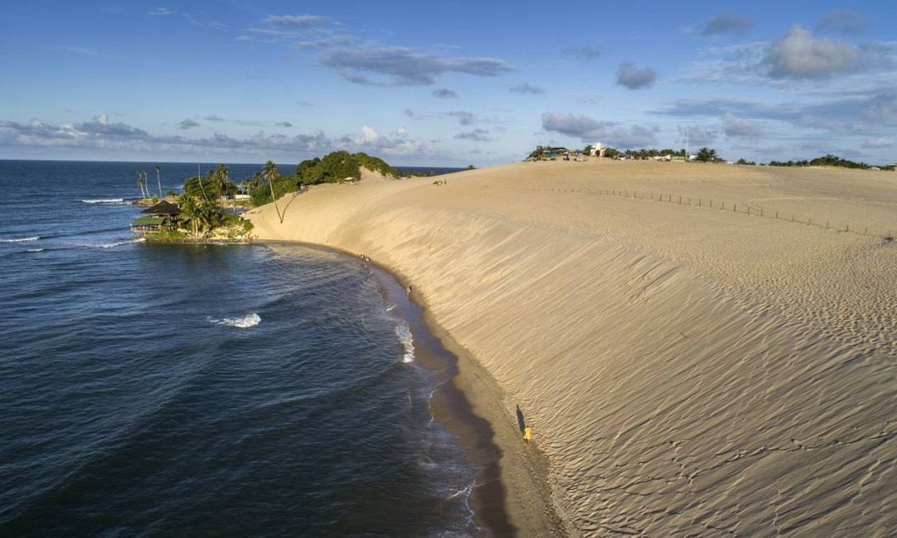
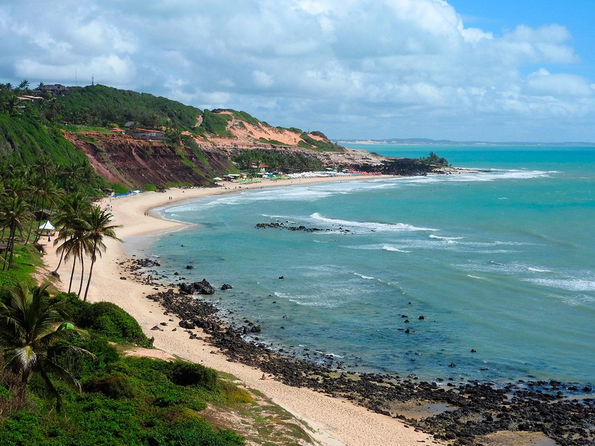
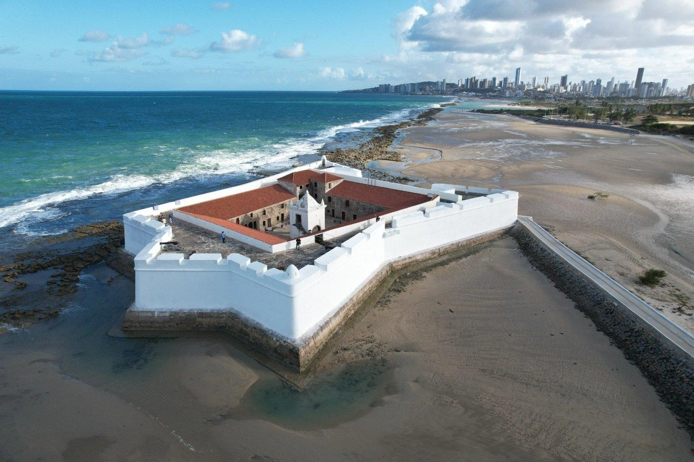
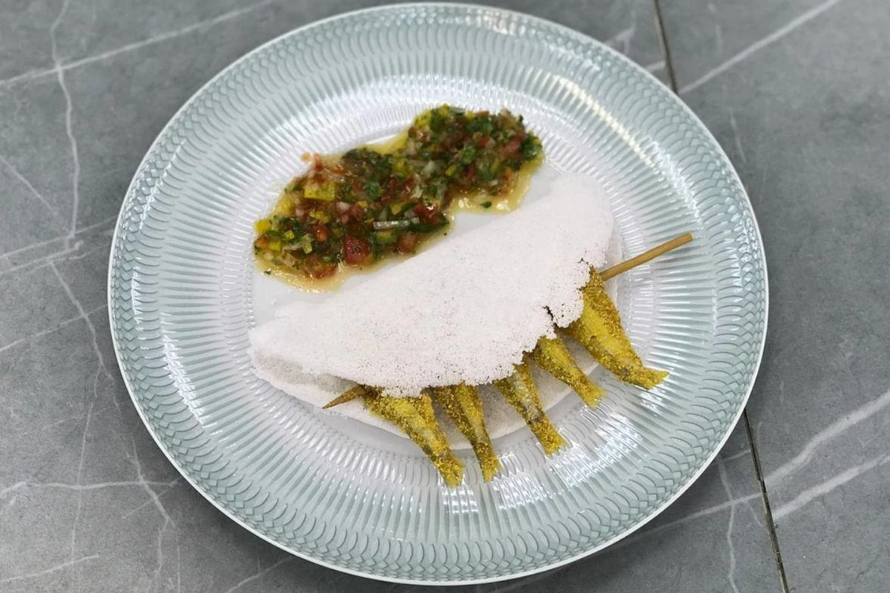
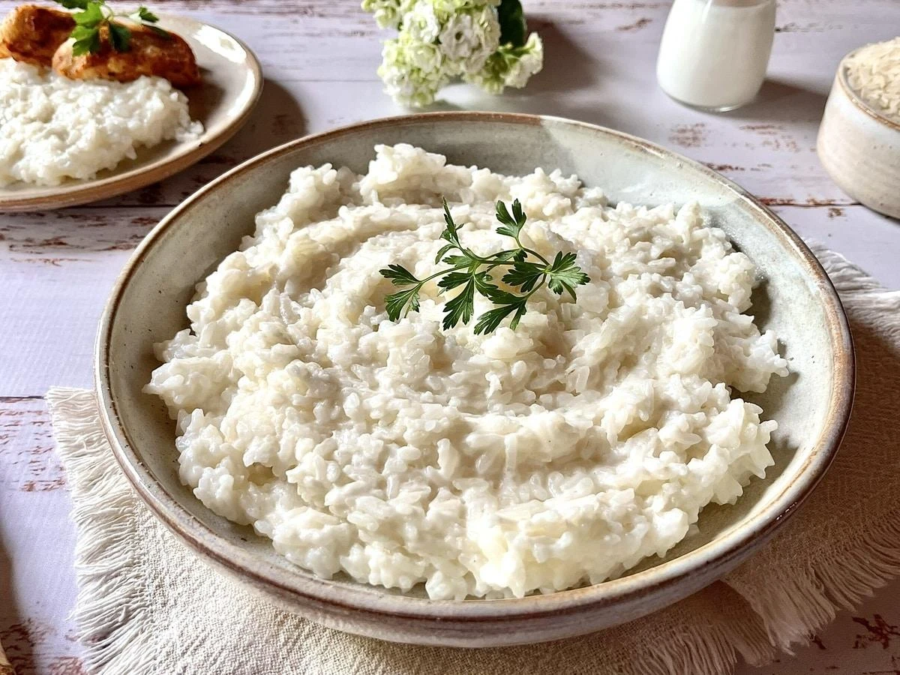
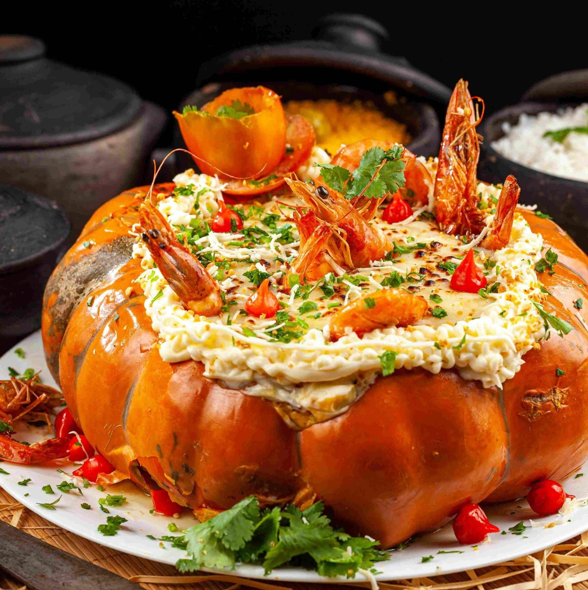

Capital
Natal
Conheça destinos, culturas, sabores e paisagens de todas as regiões
brasileiras.
Destinos, culturas e paisagens
incríveis te esperam.
O Rio Grande do Norte é um estado localizado na Região Nordeste do Brasil, conhecido por suas belas praias, dunas, falésias e clima ensolarado durante grande parte do ano. Possui grande importância turística devido às suas paisagens naturais, à rica cultura nordestina e à hospitalidade de seu povo. O estado também se destaca nacionalmente pela produção de sal marinho, energia eólica e pela carcinicultura (criação de camarão).

Natal
Aproximadamente 52.809 km²
Cerca de 3,4 milhões de habitantes
Nordeste

Localizadas no município de Extremoz, coladas a Natal, as dunas de Genipabu são um dos maiores cartões-postais do estado. O local é famoso pelos emocionantes passeios de buggy (com ou sem emoção), lagoas e os exóticos passeios de dromedário.

Localizada no município de Tibau do Sul, é considerada uma das praias mais famosas do Brasil. Pipa encanta visitantes do mundo inteiro com suas falésias coloridas, águas quentes e a presença constante de golfinhos na Baía dos Golfinhos.

Construído no século XVI, o Forte dos Reis Magos é o marco inicial de Natal e um importante monumento histórico. Sua arquitetura militar em formato de estrela e sua relevância na defesa do território atraem turistas durante todo o ano.

Patrimônio Cultural Imaterial do estado, esse prato tradicional nasceu no Mercado de Peixe da Redinha. Consiste em pequenos peixes fritos (a ginga) espetados e servidos bem quentes dentro de uma tapioca com manteiga de garrafa.

O Arroz de Leite é um prato tradicional do Rio Grande do Norte e de outros estados do Nordeste. É preparado com arroz cozido no leite, geralmente acompanhado por queijo coalho ou queijo de manteiga, resultando em uma refeição simples, cremosa e muito saborosa.

O Rio Grande do Norte é um dos maiores produtores de camarão do país. Pratos como o Camarão na Moranga (servido em molho cremoso dentro da abóbora) ou o camarão internacional destacam a força da gastronomia litorânea potiguar.
Predominantemente tropical semiárido no interior e tropical chuvoso no litoral. Temperaturas: Quente o ano todo, com médias que variam entre 24°C e 32°C, sempre acompanhadas por uma brisa agradável. Dica: A melhor época para garantir dias de sol pleno é entre setembro e fevereiro, quando o período de chuvas já passou.
Predominantemente tropical semiárido no interior e tropical chuvoso no litoral. Temperaturas: Quente o ano todo, com médias que variam entre 24°C e 32°C, sempre acompanhadas por uma brisa agradável. Dica: A melhor época para garantir dias de sol pleno é entre setembro e fevereiro, quando o período de chuvas já passou.
Natal e Região Metropolitana: Excelente para turismo histórico, praias urbanas (como Ponta Negra e o Morro do Careca) e infraestrutura hoteleira.
Natal e Região Metropolitana: Excelente para turismo histórico, praias urbanas (como Ponta Negra e o Morro do Careca) e infraestrutura hoteleira.
Não deixe de ir à Praia da Redinha ou ao Mercado Público para provar a autêntica ginga com tapioca.
Não deixe de ir à Praia da Redinha ou ao Mercado Público para provar a autêntica ginga com tapioca.